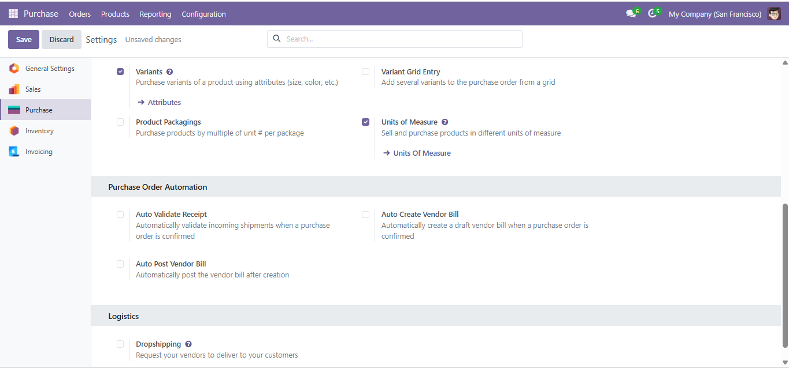
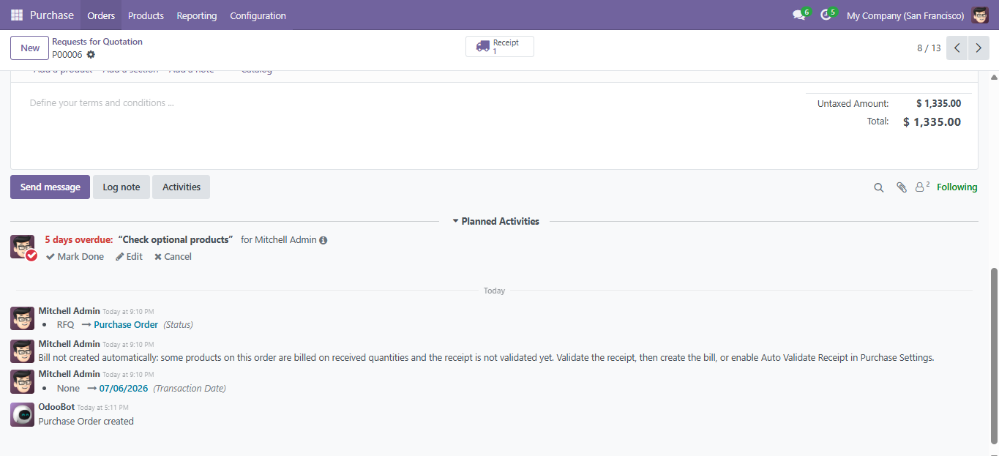

Confirm the PO. Receipt validated, bill created, bill posted. Free.
For many businesses the purchase flow is the same clicks every single time: confirm the order, open the receipt, validate it, create the bill, post it. This module collapses that into one click. Three switches in Purchase Settings, each independent, so you automate exactly as much as you trust.
Incoming shipments are confirmed, reserved and validated the moment the purchase order is confirmed.
Uses Odoo's standard billing flow, so each product's bill control policy (ordered or received quantities) is respected, not bypassed.
A third switch posts the bill immediately. Leave it off to keep a human review step before anything hits the books.
Every automated step lands in the PO chatter. If a step fails, the order still confirms and a chatter note tells you what to finish manually.
Tip: pair it with Transaction Date for Orders & Inventory by the same author. Receipts and bills then carry the order's real business date instead of today's.

Three independent switches in Purchase Settings

Every automated step logged in the order chatter
Support
Questions or a feature request? Email adedejitoriade@gmail.com. Built and maintained by Tajdigitals.